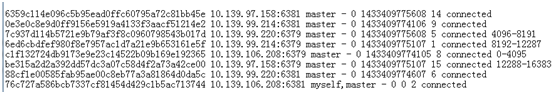

前言
自己摸索的redis cluster 手工配置的方法, 方便没有ruby环境的情况下进行配置,同时也方便了解redis cluster的大体结构。
一 编译
官方网站 http://redis.io/
下载最新版后，复制到linux主机的某个目录，该目录当前用户有rwx权限。
redis依赖比较少，一般按照如下命令就可以编译完成，如果出错，需要根据错误安装对应的依赖包。1
2
3tar zxvf redis-x.x.x.tar.gz
cd redis-x.x.x
make
如上完成之后，会在src目录下生成5个可执行文件。
分别是redis-server、redis-cli、redis-benchmark、redis-check-aof、redis-check-dump，
它们的作用如下：
redis-server：Redis服务器的daemon启动程序
redis-cli：Redis命令行操作工具。当然，你也可以用telnet根据其纯文本协议来操作
redis-benchmark：Redis性能测试工具，测试Redis在你的系统及你的配置下的读写性能
redis-check-aof：更新日志检查
redis-check-dump：用于本地数据库检查
我们只需要 redis-server 和 redis-cli就可以了。
1 | chmod +x redis-server |
加上执行权限。
然后可以在其它位置建一个新目录，然后把这2个文件复制过去就可以了。
例如 /home/redis/redis_node
给redis指定一个配置文件,默认是 redis.conf
1 | cd /home/redis/redis_node |
只需要最小的配置内容就可以，按以下配置为纯内存方式。1
2
3
4
5
6
7
8$ cat redis.conf
port 6379
cluster-enabled yes
cluster-config-file nodes.conf
clusteer-node-timeout 5000
appendonly no
appendfsync no
save ""
其中可以看到第三行是配置
cluster的配置文件为 nodes.conf，这个文件不用自己创建，一会创建cluster的时候，会自动根据配置生成。
保存 redis.conf之后，使用 ./redis-server redis.conf & 起来就可以了。
如果一台机器配多个实例，那么就复制一份 redis_node 出来，1
cp -rf redis_node redis_node1
然后改一下 redis.conf里面的端口就行。
这样，redis实例就启动了。
二 redis cluster的配置
2.1 官方推荐配置
redis是ruby社区里面流行起来的，所以官方网站上也是主要也是用ruby做了一些工具提供给用户使用。
如果部署的环境ruby环境安装比较全面，可以使用官方的redis cluster创建工具。
在第一章中编译的src目录下有一个 redis-trib.rb 文件。这个就是官方用来配置cluster的工具。
比如你在本机启动了6个实例，端口分别是 7000 - 7005 。那么直接使用：
1 | ./redis-trib.rb create --replicas 1127.0.0.1:7000 127.0.0.1:7001 127.0.0.1:7002 127.0.0.1:7003 127.0.0.1:7004 127.0.0.1:7005 |
命令就可以把集群创建完毕。
其中的create –replicas 代表为每台master创建一个slave，保证高可用。
那么上面的命令就是创建 3个master 和 3个slave的集群。
所以至少要6个实例才可以创建成功，如果少于6个实例，执行工具会进行错误提示。
具体操作可以自己验证。
官方链接 http://redis.io/topics/cluster-tutorial#creating-the-cluster
2.2 手工配置(重点)
有时候由于部署环境的限制，无法提供可用的ruby环境，而且用redis-trib.rb不利于了解cluster之间的连接机制，出问题了也不好定位，所以最好是能手工进行配置。
redis cluster有一个设计逻辑，就是给每个redis实例分配一定数量的slots，slot可以理解为存放数据的一个个桶。它定义了一个数量16384 也就是 2的14次方。
redis cluster定义“集群当前可用”的状态就是：
这16384个slots(序号是0-16383)都分配到各个实例了，并且实例之前能够进行通信。
例如上面说的3个master的集群，可以0-5000的 slots放在 master 1 上，5001-10000放到了master 2 上，10001-16383放到了master 3 上面，
同时它们俩俩通信都是通的。那么集群就是可用的，可以看到，集群是否可用，和slave没有关系。
slave是在master挂掉的时候，可以及时顶上master的位置。
由于redis cluster的设计机制，slave会异步的复制master上面的slots。
所以当master挂了，slave顶替了master的位置，这时候16384个slots依然是完整的，所以整个集群依然是可用的。
所以手工创建redis cluster简化为4个步骤：
- 将16384个slots尽量均匀的分配给各个master实例
- 建立各个实例(包含master与slave)俩俩之间的通信联系
- 给每个master至少一个slave，保证高可用
- 验证cluster是否可用
第一章中说到redis-cli这个执行文件，就是用来和redis的实例进行交互的，redis定义了各种命令和实例进行交互。
命令清单参考官方地址
http://redis.io/commands
2.2.1 分配slots
比如有有4台机器，端口都是6379
10.139.106.208
10.139.99.220
10.139.99.214
10.139.97.158
那么就是把16384切分为较为均匀的4段。
使用的是cluster addslots 的命令，由于不支持批量添加操作，所以需要使用shell脚本进行添加。
1 | for i in{0..4095}; do ./redis-cli -h 10.139.106.208 -p 6379 cluster addslots $i; done |
把每一行保存为一个sh文件，然后chmod +x赋予可执行权限。
这样就把16384个slots完整的分配给4个master了。
2.2.2 建立各个实例之间的通信
比如每台机器都在 6381端口也起了一个redis实例作为slave。
那么这个集群应该总共有8个实例，其中4个master和4个slave。
那么就是建立这8个实例之间的俩俩通信。
进入某个redis_node目录，然后运行 ./redis-cli -h 10.139.106.208 -p 6379 进入
10.139.106.208:6379这个实例的命令行。
那么使用cluster meet命令建立通信：
1 | 10.139.106.208:6379> cluster meet 10.139.106.208 6381 |
类似的把其他7个实例都建立通信就可以了。
只需要在一台机器上进行操作就可以，其他机器会自动添加通信的配置。
例如上面208:6379 使用 cluster meet 分别添加了 208:6381 和 220:6379 这两个实例，那么 208:6381 和 220:6379也自动建立了通信。
2.2.3 给master配置slave
1 | ./redis-cli -h 10.139.106.208 -p 6379 进入某个实例的命令行。 |
会显示出每个node的id。

把这些复制到文本文件中，为下一步使用。
接下来退出 ./redis-cli ( ctrl + c) 。
然后分别登录到各个候选的slave上面 。比如 208:6381 要做 158:6379的slave。
可以看到 158:6379 的id是 be315a2d2a392dd57dc3a07c58d4f2a73a42ce00
通过以下命令1
2$ ./redis-cli -h 10.139.106.208 -p 6381
10.139.106.208:6381> cluster replicate be315a2d2a392dd57dc3a07c58d4f2a73a42ce00
这样就把slave加上了。
其他的slave也按照这个方法加到master上面。
2.2.4 验证集群是否可用
1 | $ ./redis-cli |
这3行显示出来，集群就是正常的。